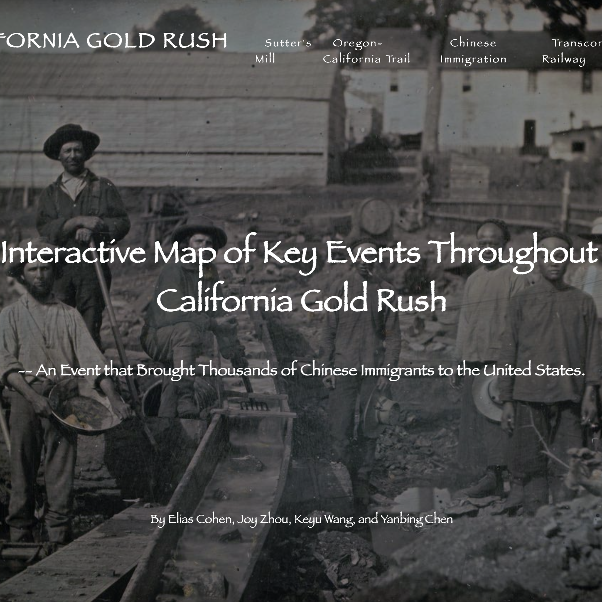
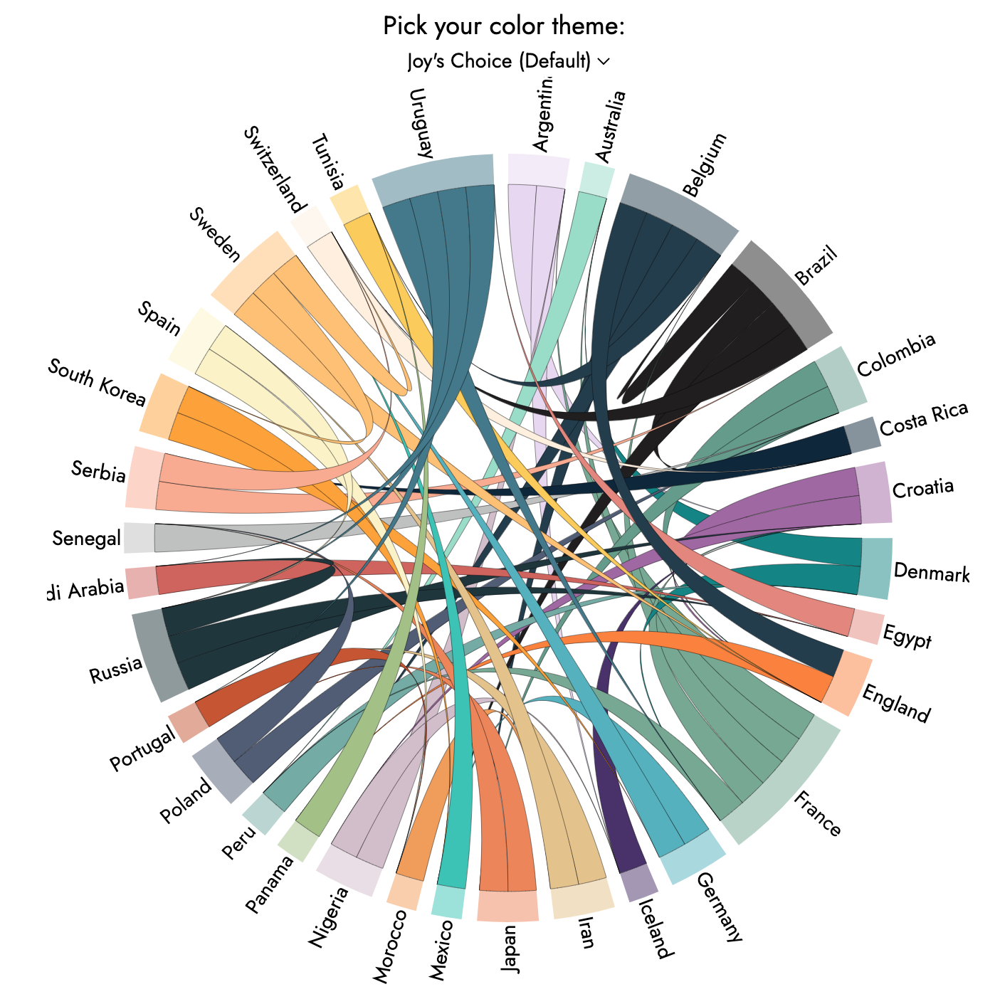
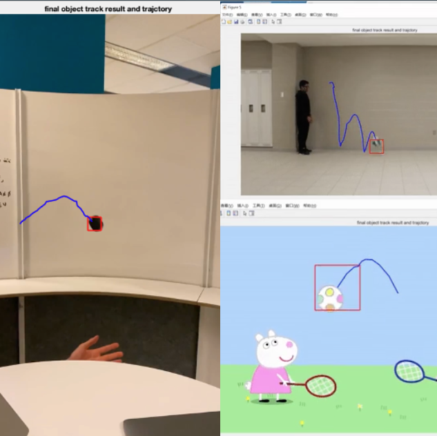

Keyu Wang
McGill University. Aspiring Frontend Developer | Undergraduate Research Assistant

I am a 3rd-year undergraduate student at the McGill University’s Computer Science program with a minor in Geographical Information Science. Currently, I am supervised by Professor Raja Sengupta (affiliations: GIScience, Spatial decision support systems, Agent-based modeling), working on project website development, webmap data visualization for possible migrations taken by nobles in early imperial China (Western Han period).
I have an interested in frontend development and web data visualization, especially when associated with Geospatial Data Science.
Whether you are an incoming student at the McGill University or would like to chat in general, feel free to reach out to me via one of the contact information below.
highlighting skills
- Programming Languages: Java, Python, C, JavaScript, HTML, CSS, MATLAB, Bash, OCaml
- Frameworks & Tools: JUnit, JavaFX, Git, D3.js, React.js, Mapbox, ArcGIS
- Strong video and photo editing knowledge using Adobe Creative Cloud (Premiere, Photoshop, Lightroom)
- Dancer & Video creator when I want a break from 👩🏻💻👩🏻💻👩🏻💻
- Languages: English, Madarin(both native fluency), Japanese(JLPT N2 certified, working proficiency)
education
|
McGill University Computer Science Major, Geographic Information Science Minor (cGPA: 3.97/4.0) Relevant courses: Software Design, Algorithms and Data Structures, Algorithm Design, Fundamentals of Computer Vision, Principles of Geospatial Web Awards: Dean’s Honours List 2020 & 2021, NSERC Undergraduate Student Research Awards 2023 |
projects
For more projects, please visit my Github
|  |
[Oral Presentation on GIS Day 2022] @ Department of Geography, McGill U, class project for GEOG384 Principles of Geospatial Web Website Visualized the history and impacts of immigration to California during 1848-1869 via a story map; Developed base map using Mapbox & GeoJSON, then HTML & JavaScript for webmap showcase. |
|  |
[Class Project] @ McGill, GEOG384 Principles of Geospatial Web. With Cohen E., Zhou J. Website Visualized the diversity of the 2018 FIFA World Cup by a interactive chord diagram using D3.js, JavaScript & HTML. |
|  |
[Final Project] @ McGill, COMP558 Fundamentals of Computer Vision. With Lane-Smith J., Zhang R. Detailed Report / Code Developed object tracking & frame prediction methods for aerial objects in MATLAB based on classic computer vision algorithms. In this project, we've successfully implemented Farneback optical flow for object detection, Meanshift algorithm for object tracking, methods for background extraction and path prediction. |
experience
For more past work experience, please visit my LinkedIn
|
Department of Geography, McGill University | 2023-Present Under the supervision of Professor Raja Sengupta, I am developing the project website including implementing time sliders for geospatial data visualization for Shi Rao's trip based on Agent-based Models during the Western Han Period, collaborting with the Department of History. |
|
Appleby Camps | 2022 Planned course materials for coding and video game design camps, and taught basic Python and GameMaker to over 140 children from 7 to 14 years old. |
|
McGill University Chinese Students & Scholars Association(CSSA) | 2020-Present Organized Montreal Chinese New Year Gala by planning auditions and rehearsals as a vice director; Collaborate within the media team of 7 people as a leader to shoot 4 promotional videos for club sponsors each year; Lead internal events for 60 members such as tie-dying uniforms and club photoshoots. |
|
EF Education First | 2020-2021 Delivered the welcome and closing speeches for 320 demo classes facing potential customers (who are mostly kids aged from 3 to 7); Ensured an uplifting class atmosphere and smooth activities; Solved in-class conflicts often. |
|
International Volunteer HQ | 2019 Taught over 100 local children aged from 2 to 5 basic English words and sentences in Ho Chi Minh City, Vietnam for half a month. |
interests/ hobbies
I am an active dancer at K-RAVE McGill and I enjoy performing and producing K-POP dancer cover videos.

I have been involved in a video production team for the last 5 years, with a main interest in food documentaries & travel vlogs. Check out my videography & graphic design portfolio here!
The most exciting part of travelling to me is to embrace the culture from underrated local food and the interaction with locals during my food hunting journey. With my skills in video production, I'm glad that I could record my adventures with food!